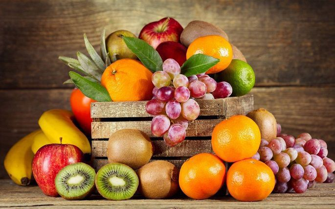
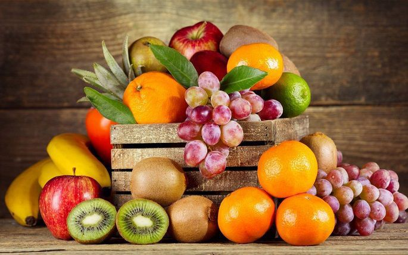
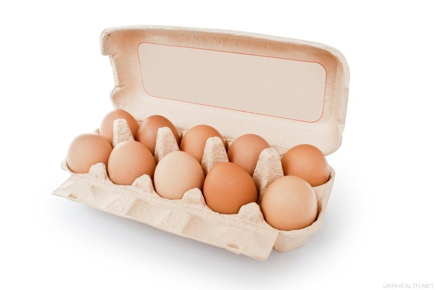
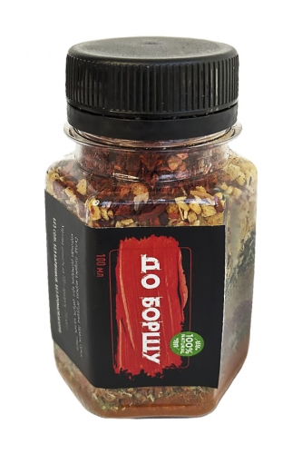
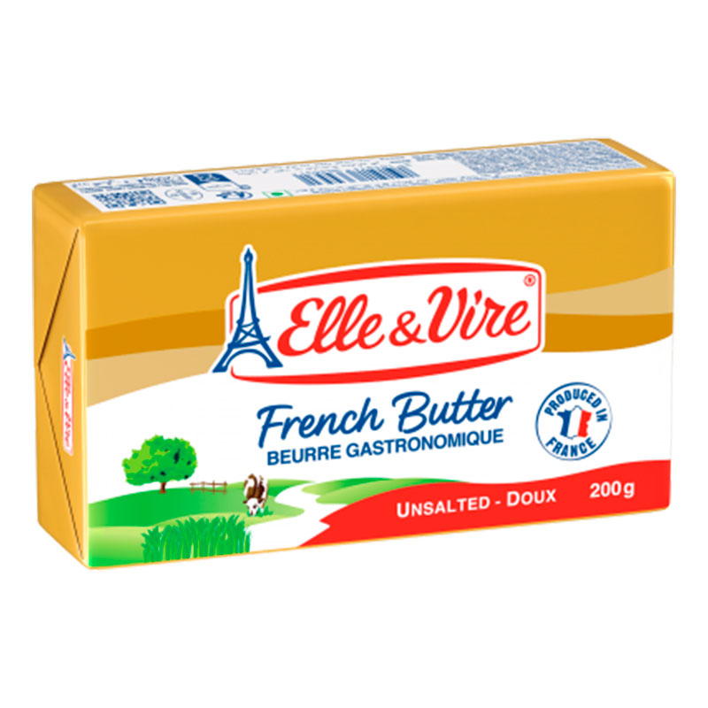
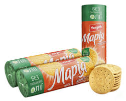

Адреса: вул. Лесі Українки, 25, м. Львів

Дні постачання: Понеділок, Середа, П'ятниця
Контакти: +380 (32) 555-55-55
 

| Фото | Назва | Опис | Термін дії | Ціна |
|---|---|---|---|---|
| Молоко пастеризоване 2.5% | Свіже пастеризоване молоко середньої жирності, розфасоване у зручні тетрапаки. Підходить для приготування каш, кави або чаю. | 2024-12-01 / 2024-12-10 | 90.00 грн / 72.00 грн | |
| Сир "Гауда" твердий | Нідерландський твердий сир "Гауда", витриманий з насиченим вершковим смаком. Ідеально підходить для закусок та салатів. | 2024-12-03 / 2024-12-15 | 150.00 грн / 120.00 грн | |
| Хліб пшеничний "Класичний" | Свіжий пшеничний хліб зі скоринкою. Ідеально підходить для бутербродів чи супів. | 2024-12-05 / 2024-12-12 | 35.00 грн / 28.00 грн | |
|  | Яйця курячі | Великі курячі яйця з екологічних господарств. Можна використовувати для випічки чи смаження. | 2024-12-07 / 2024-12-14 | 50.00 грн / 40.00 грн |
| Огірки свіжі тепличні | Соковиті та хрусткі огірки. Прекрасно доповнюють салати або закуски. | 2024-12-06 / 2024-12-13 | 40.00 грн / 32.00 грн | |
| Помідори свіжі, червоні | Солодкі та соковиті червоні помідори. Ідеальний варіант для салатів чи соусів. | 2024-12-02 / 2024-12-09 | 60.00 грн / 48.00 грн | |
| Картопля молода, органічна | Натуральна молода картопля. Підходить для запікання або смаження. | 2024-12-04 / 2024-12-11 | 45.00 грн / 36.00 грн | |
| Картопля, новий врожай | Свіжозібрана картопля з насиченим смаком. Для різноманітних гарнірів або перших страв. | 2024-12-03 / 2024-12-10 | 35.00 грн / 28.00 грн | |
| Гречка, першого ґатунку | Гречана крупа високої якості. Ідеально підходить для гарнірів або каш. | 2024-12-02 / 2024-12-09 | 70.00 грн / 56.00 грн | |
 |
Борошно пшеничне вищого ґатунку | Свіже борошно для приготування випічки, хліба та інших кулінарних шедеврів. | 2024-12-01 / 2024-12-08 | 45.00 грн / 36.00 грн |
|  | Спеції для борщу | Добірна ароматна суміш для приготування справжнього українського борщу. | 2024-12-04 / 2024-12-11 | 30.00 грн / 24.00 грн |
|  | Масло вершкове натуральне, 82% | Свіже масло вершкове з натуральних інгредієнтів. Для сніданків, випічки чи бутербродів. | 2024-12-06 / 2024-12-13 | 120.00 грн / 96.00 грн |
| Йогурт натуральний, без цукру | Класичний натуральний йогурт. Легка консистенція, чудово пасує до фруктів чи мюслів. | 2024-12-08 / 2024-12-15 | 60.00 грн / 48.00 грн | |
| Кефір кисломолочний, 1% | Низькокалорійний кефір для щоденного вживання. Підходить для раціону здорового харчування. | 2024-12-05 / 2024-12-12 | 50.00 грн / 40.00 грн | |
| Сік яблучний прямого віджиму | Свіжий яблучний сік без цукру та консервантів. Прекрасний напій для спраги. | 2024-12-07 / 2024-12-14 | 45.00 грн / 36.00 грн | |
|  | Печиво "Марія", класичне | Класичне печиво до чаю з ніжним ванільним смаком. | 2024-12-06 / 2024-12-13 | 30.00 грн / 24.00 грн |
| Чай чорний "Класичний" | Ароматний чорний чай крупнолистової ферментації. Смак гармонійний, ідеальний для будь-якого часу доби. | 2024-12-01 / 2024-12-10 | 80.00 грн / 64.00 грн | |
| Шоколад молочний "Какао-Люкс", 100 г | Ніжний молочний шоколад з кремовим смаком і легкими нотками какао. Без пальмової олії. | 2024-12-02 / 2024-12-09 | 35.00 грн / 28.00 грн | |
| Олія соняшникова рафінована, 1 л | Високоякісна рафінована олія соняшника, чудово підходить для смаження, тушкування та приготування салатів. | 2024-12-03 / 2024-12-12 | 60.00 грн / 48.00 грн | |
| Банани | Стиглі, солодкі банани екстракласу, багаті на калій. Прекрасно підходять для перекусу чи випічки. | 2024-12-01 / 2024-12-08 | 45.00 грн / 36.00 грн | |
| Яблука сорту "Фуджі" | Соковиті та хрусткі яблука сорту "Фуджі" з насиченим солодкуватим смаком. | 2024-12-02 / 2024-12-09 | 30.00 грн / 24.00 грн | |
| Мандарини | Стиглі та соковиті мандарини з тонкою шкіркою. Чудовий вибір для святкового столу. | 2024-12-05 / 2024-12-12 | 50.00 грн / 40.00 грн | |
| Морква молода | Соковита морква з насиченим смаком. Підходить для салатів, супів або дитячого харчування. | 2024-12-03 / 2024-12-10 | 25.00 грн / 20.00 грн | |
| Цибуля ріпчаста | Цибуля ріпчаста, ароматна та соковита. Основний інгредієнт для багатьох страв. | 2024-12-07 / 2024-12-14 | 15.00 грн / 12.00 грн | |
| Часник молодий | Ароматний молодий часник, ідеальний для приготування соусів та маринадів. | 2024-12-06 / 2024-12-13 | 40.00 грн / 32.00 грн | |
| Крупа кукурудзяна, 1 кг | Натуральна кукурудзяна крупа для приготування каш, мамалиги або запіканок. | 2024-12-01 / 2024-12-08 | 30.00 грн / 24.00 грн | |
| Буряк столовий | Буряк із глибоким червоним кольором, підходить для борщу, салатів або запікання. | 2024-12-02 / 2024-12-09 | 20.00 грн / 16.00 грн | |
 |
Мінеральна вода "Карпатська" | Негазована мінеральна вода зі збалансованим вмістом мінералів. Рекомендована для щоденного вживання. | 2024-12-03 / 2024-12-12 | 25.00 грн / 20.00 грн |
| Газована вода "Боржомі" | Природна мінеральна вода з легким газуванням. Ідеально підходить для втамування спраги. | 2024-12-01 / 2024-12-10 | 40.00 грн / 32.00 грн | |
| Апельсини великі | Соковиті та солодкі апельсини. Чудовий вибір для фрешів або перекусу. | 2024-12-05 / 2024-12-12 | 60.00 грн / 48.00 грн | |
 |
Риба форель свіжа, ціла | Форель високої якості, свіжа та з насиченим смаком. Для запікання чи гриля. | 2024-12-04 / 2024-12-11 | 350.00 грн / 280.00 грн |
| Шинка копчена "Домашня", 300 г | Соковита та ароматна копчена шинка з натуральними спеціями. | 2024-12-06 / 2024-12-13 | 120.00 грн / 96.00 грн | |
| Йогурт полуничний, 200 г | Полуничний йогурт із натуральними ягодами. Прекрасний вибір для легкого сніданку. | 2024-12-08 / 2024-12-15 | 25.00 грн / 20.00 грн | |
| Рис довгозернистий преміум, 1 кг | Білий рис преміум класу. Ідеальний для приготування плову, гарнірів або суші. | 2024-12-02 / 2024-12-09 | 60.00 грн / 48.00 грн | |
| Макарони "Barilla", 500 г | Паста високої якості з твердих сортів пшениці. Підходить для приготування італійських страв. | 2024-12-03 / 2024-12-10 | 30.00 грн / 24.00 грн | |
| Мед натуральний, 500 г | Свіжий мед з ароматним трав’яним присмаком. Рекомендований як підсолоджувач чи для лікування простуди. | 2024-12-07 / 2024-12-14 | 120.00 грн / 96.00 грн | |
| Печиво пісочне "Тет-ф-Тет ваніль", 75 г | Смачне хрустке печиво з ванільним ароматом. Прекрасно доповнює чай чи каву. | 2024-12-06 / 2024-12-13 | 40.00 грн / 32.00 грн | |
| Коктейль ванільний, 500 мл | Ніжний ванільний коктейль з натурального молока. Чудовий напій для десертів. | 2024-12-08 / 2024-12-15 | 45.00 грн / 36.00 грн |